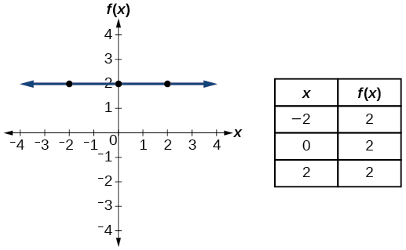
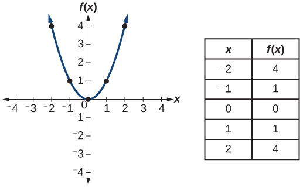
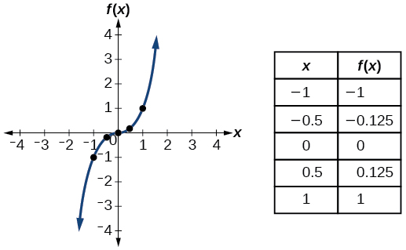
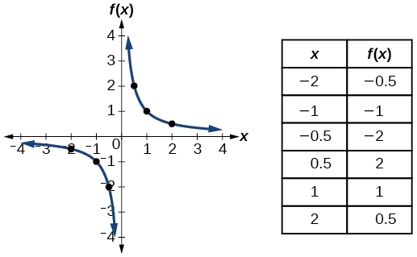
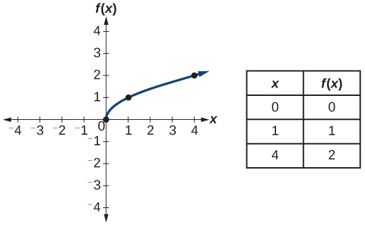

ماخذ دا ترجمہ: OpenStax Precalculus 2e, §1.1 دا چُنیا ہویا حصہ؛ پورے حصے دا ترجمہ نہیں۔
طے کرنا کہ فنکشن اک توں اک اے یا نہیں
کجھ فنکشناں وچ اک دِتی ہوئی آؤٹ پُٹ قدر، دو یا دو توں ودھ اِن پُٹ قدراں نال جُڑی ہوندی اے۔ مثال لئی، ایس باب دے شروع وچ وکھائی گئی حصص دی قیمت دے چارٹ والی شکل وچ، پنج وکھ وکھ تاریخاں نوں حصے دی قیمت $1000 سی۔ ایس دا مطلب اے کہ پنج وکھ وکھ اِن پُٹ قدراں توں اِکّو آؤٹ پُٹ قدر $1000 ملی سی۔
پر کجھ فنکشناں وچ ہر اِن پُٹ لئی صرف اک آؤٹ پُٹ ہون دے نال نال، ہر آؤٹ پُٹ قدر لئی وی صرف اک اِن پُٹ قدر ہوندی اے۔ اسیں ایہناں نوں اک توں اک فنکشن آکھدے آں۔ مثال لئی، اک ایسا سکول ویکھو جیہڑا صرف حرفی گریڈ تے اوہناں دے اعشاری برابر ورتدا اے، جیویں جدول 1.1.13 وچ دِتے گئے نیں۔
| حرفی گریڈ | گریڈ پوائنٹ اوسط |
|---|---|
| A | 4.0 |
| B | 3.0 |
| C | 2.0 |
| D | 1.0 |
گریڈ دین دا ایہہ نظام اک توں اک فنکشن وکھاندا اے، کیوں جے اِن پُٹ والا ہر حرف اک خاص گریڈ پوائنٹ اوسط دی آؤٹ پُٹ دیندا اے، تے ہر گریڈ پوائنٹ اوسط صرف اک اِن پُٹ حرف نال جُڑدی اے۔
ایس خیال نوں شکل وچ ویکھن لئی، آؤ شکل 1.1.1(a) تے شکل 1.1.1(b) وچ وکھائے دو سادے فنکشن فیر ویکھیے۔ حصے (a) والا فنکشن ایسا تعلق وکھاندا اے جیہڑا اک توں اک فنکشن نہیں، کیوں جے اِن پُٹ تے دوویں آؤٹ پُٹ دیندے نیں۔ حصے (b) والا فنکشن ایسا تعلق وکھاندا اے جیہڑا اک توں اک فنکشن اے، کیوں جے ہر اِن پُٹ اک اکلوتی آؤٹ پُٹ نال جُڑی اے۔
حل کیتی مثال 13
طے کرنا کہ تعلق اک توں اک فنکشن اے یا نہیں
کی دائرے دا رقبہ اوہدے رداس دا فنکشن اے؟ جے ہاں، تاں کی ایہہ فنکشن اک توں اک اے؟
حل
رداس والے دائرے دا اک اکلوتا رقبہ ہوندا اے، جیہڑا نال دِتا جاندا اے۔ ایس لئی ہر اِن پُٹ لئی صرف اک آؤٹ پُٹ اے۔ رقبہ، رداس دا فنکشن اے۔
جے فنکشن اک توں اک اے، تاں آؤٹ پُٹ قدر، یعنی رقبہ، نوں اک اکلوتی اِن پُٹ قدر، یعنی رداس، نال جُڑنا چاہیدا اے۔ رقبے دی کوئی وی مقدار ، فارمولے نال دِتی جاندی اے۔ کیوں جے رقبے تے رداس مثبت عدد نیں، ایس لئی ٹھیک اک حل اے: ۔ سو دائرے دا رقبہ، اوہدے رداس دا اک توں اک فنکشن اے۔
کھڑی لکیر دی پرکھ ورتنا
جیویں اسیں اُتّے کجھ مثالاں وچ ویکھیا اے، فنکشن نوں گراف نال وکھایا جا سکدا اے۔ گراف تھوڑی جیہی تھاں وچ اِن پُٹ تے آؤٹ پُٹ دیاں بہت ساریاں جوڑیاں وکھاندے نیں۔ اوہناں دی دِسن والی معلومات اکثر تعلق سمجھنا سوکھا کر دیندی اے۔ عام رواج مطابق، گراف وچ اِن پُٹ قدراں لیٹے محور دے نال تے آؤٹ پُٹ قدراں کھڑے محور دے نال رکھیاں جاندیاں نیں۔
عام طور اُتے گراف وچ اِن پُٹ قدر دا ناں تے آؤٹ پُٹ قدر دا ناں رکھیا جاندا اے۔ اسیں آکھدے آں کہ ، دا فنکشن اے؛ یا جے فنکشن دا ناں دِتا ہووے، تاں لکھدے آں، جتھے اوہ ناں اے۔ فنکشن دا گراف، سطح دے اوہناں سارے نقطیاں دا سیٹ اے جیہڑے مساوات نوں پورا کردے نیں۔ جے فنکشن صرف کجھ اِن پُٹ قدراں لئی تعریف کیتا گیا اے، تاں اوہدا گراف صرف کجھ نقطے اے؛ ہر نقطے دا x-کوارڈینیٹ اک اِن پُٹ قدر اے تے اوہدا y-کوارڈینیٹ اوہدے نال جُڑی آؤٹ پُٹ قدر اے۔ مثال لئی، شکل 1.1.11 دے گراف اُتے کالے نقطے دسّ دے نیں کہ تے ۔ پر دے اوہناں سارے نقطیاں دا سیٹ جیہڑے نوں پورا کردے نیں، اک وکر اے۔ وکھایا گیا وکر تے نوں شامل کردا اے، کیوں جے ایہہ اوہناں نقطیاں وچوں لنگھدا اے۔

چھوٹی سکرین اُتے پوری شکل ویکھن لئی پاسے سرکاؤ، یا اصل شکل وکھری کھولو۔
ایس شکل دے ماخذ والے متبادل متن بارے ساڈی وکھری درستی تے وضاحت وی ویکھو۔
کھڑی لکیر دی پرکھ نال طے کیتا جا سکدا اے کہ گراف اک فنکشن وکھاندا اے یا نہیں۔ جے اسیں کوئی ایسی کھڑی لکیر کھچ سکدے آں جیہڑی گراف نوں اک توں ودھ واری کٹّدی اے، تاں گراف فنکشن دی تعریف نہیں کردا، کیوں جے فنکشن وچ ہر اِن پُٹ قدر لئی صرف اک آؤٹ پُٹ قدر ہوندی اے۔ شکل 1.1.12 ویکھو۔

چھوٹی سکرین اُتے پوری شکل ویکھن لئی پاسے سرکاؤ، یا اصل شکل وکھری کھولو۔
ایس شکل دے ماخذ والے متبادل متن بارے ساڈی وکھری درستی تے وضاحت وی ویکھو۔
حل کیتی مثال 14
کھڑی لکیر دی پرکھ لا کے ویکھنا
شکل 1.1.13 دے کیہڑے گراف، فنکشن نوں وکھاندے نیں؟

چھوٹی سکرین اُتے پوری شکل ویکھن لئی پاسے سرکاؤ، یا اصل شکل وکھری کھولو۔
ایس شکل دے ماخذ والے متبادل متن بارے ساڈی وکھری درستی تے وضاحت وی ویکھو۔
حل
جے کوئی کھڑی لکیر گراف نوں اک توں ودھ واری کٹّدی اے، تاں گراف نال وکھایا گیا تعلق فنکشن نہیں۔ ویکھو کہ شکل 1.1.13 دے حصیاں (a) تے (b) وچ وکھائے دوہاں گرافاں اُتے کوئی وی کھڑی لکیر صرف اک نقطے وچوں لنگھے گی۔ ایس توں اسیں نتیجہ کڈھ سکدے آں کہ ایہہ دوویں گراف فنکشن وکھاندے نیں۔ تیجا گراف فنکشن نہیں وکھاندا، کیوں جے x دیاں زیادہ تر قدراں اُتے، کھڑی لکیر گراف نوں اک توں ودھ نقطیاں اُتے کٹّے گی، جیویں شکل 1.1.16 وچ وکھایا گیا اے۔

چھوٹی سکرین اُتے پوری شکل ویکھن لئی پاسے سرکاؤ، یا اصل شکل وکھری کھولو۔
ایس شکل دے ماخذ والے متبادل متن بارے ساڈی وکھری درستی تے وضاحت وی ویکھو۔
لیٹی لکیر دی پرکھ ورتنا
جدوں اسیں طے کر لئیے کہ گراف فنکشن دی تعریف کردا اے، تاں ایہہ پرکھن دا اک سوکھا طریقہ کہ فنکشن اک توں اک اے یا نہیں، لیٹی لکیر دی پرکھ اے۔ گراف وچوں لیٹیاں لکیراں کھچو۔ جے کوئی لیٹی لکیر گراف نوں اک توں ودھ واری کٹّدی اے، تاں گراف اک توں اک فنکشن نہیں وکھاندا۔
حل کیتی مثال 15
لیٹی لکیر دی پرکھ لا کے ویکھنا
شکل 1.1.13(a) تے شکل 1.1.13(b) وچ وکھائے فنکشن ویکھو۔ کی ایہناں دوہاں وچوں کوئی اک توں اک اے؟
حل
شکل 1.1.13(a) والا فنکشن اک توں اک نہیں۔ شکل 1.1.10 وچ وکھائی لیٹی لکیر فنکشن دے گراف نوں دو نقطیاں اُتے کٹّدی اے (تے اسیں ایسی لیٹیاں لکیراں وی لبھ سکدے آں جیہڑیاں ایہنوں تِن نقطیاں اُتے کٹّن)۔

چھوٹی سکرین اُتے پوری شکل ویکھن لئی پاسے سرکاؤ، یا اصل شکل وکھری کھولو۔
ایس شکل دے ماخذ والے متبادل متن بارے ساڈی وکھری درستی تے وضاحت وی ویکھو۔
شکل 1.1.13(b) والا فنکشن اک توں اک اے۔ کوئی وی لیٹی لکیر اک ترچھی سیدھی لکیر نوں ودھ توں ودھ اک واری کٹّے گی۔
بنیادی اوزار والے فنکشن پچھاننا
ایس کتاب وچ اسیں فنکشناں نوں ویکھاں گے: اوہناں دے گرافاں دیاں شکلاں، اوہناں دیاں خاص پہچاناں، اوہناں دے جبری فارمولے، تے اوہناں نال سوال حل کرن دے طریقے۔ پڑھنا سِکھدیاں اسیں حروف توں شروع کردے آں۔ حساب کرنا سِکھدیاں اسیں عدداں توں شروع کردے آں۔ ایس طرح فنکشناں نال کم کردیاں وی بنیادی حصیاں دا اک سیٹ ہونا مدد دیندا اے، جنہاں نوں جوڑ کے اگلا کم کیتا جا سکے۔ اسیں ایہناں نوں اپنے «بنیادی اوزار والے فنکشن» آکھدے آں: ایہہ ناں دِتے ہوئے بنیادی فنکشناں دا اک سیٹ اے، جنہاں دا گراف، فارمولا تے خاص خوبیاں سانوں پتا ہوندیاں نیں۔ بہت سارے کیلکولیٹراں اُتے ایہناں وچوں کجھ فنکشناں لئی وکھ وکھ بٹن مقرر ہوندے نیں۔ ایہناں تعریفاں وچ اسیں نوں اِن پُٹ متغیر تے نوں آؤٹ پُٹ متغیر دے طور اُتے ورتاں گے۔
ایس کتاب وچ سانوں ایہہ بنیادی اوزار والے فنکشن، اوہناں دے میل، اوہناں دے گراف تے اوہناں دیاں تبدیلیاں مُڑ مُڑ ملن گیاں۔ جے اسیں ایہناں فنکشناں تے اوہناں دیاں خاصیتاں نوں ناں، فارمولے، گراف تے جدول دیاں بنیادی خاصیتاں توں چھیتی پچھان سکیے، تاں بہت مدد ملے گی۔ جدول 1.1.14 وچ وکھائے ہر فنکشن دے نال اوہدا گراف تے جدول دیاں کجھ نمونہ قدراں شامل نیں۔
| بنیادی اوزار والے فنکشن | ||
|---|---|---|
| ناں | فنکشن | گراف |
| مستقل | ، جتھے مستقل اے۔ |  چھوٹی سکرین اُتے پوری شکل ویکھن لئی پاسے سرکاؤ، یا اصل شکل وکھری کھولو۔ ایس شکل دے ماخذ والے متبادل متن بارے ساڈی وکھری درستی تے وضاحت وی ویکھو۔ |
| شناختی |  چھوٹی سکرین اُتے پوری شکل ویکھن لئی پاسے سرکاؤ، یا اصل شکل وکھری کھولو۔ ایس شکل دے ماخذ والے متبادل متن بارے ساڈی وکھری درستی تے وضاحت وی ویکھو۔ | |
| مطلق قدر |  چھوٹی سکرین اُتے پوری شکل ویکھن لئی پاسے سرکاؤ، یا اصل شکل وکھری کھولو۔ ایس شکل دے ماخذ والے متبادل متن بارے ساڈی وکھری درستی تے وضاحت وی ویکھو۔ | |
| مربعی |  چھوٹی سکرین اُتے پوری شکل ویکھن لئی پاسے سرکاؤ، یا اصل شکل وکھری کھولو۔ ایس شکل دے ماخذ والے متبادل متن بارے ساڈی وکھری درستی تے وضاحت وی ویکھو۔ | |
| مکعبی |  چھوٹی سکرین اُتے پوری شکل ویکھن لئی پاسے سرکاؤ، یا اصل شکل وکھری کھولو۔ ایس شکل دے ماخذ والے متبادل متن بارے ساڈی وکھری درستی تے وضاحت وی ویکھو۔ | |
| اُلٹ قدر |  چھوٹی سکرین اُتے پوری شکل ویکھن لئی پاسے سرکاؤ، یا اصل شکل وکھری کھولو۔ ایس شکل دے ماخذ والے متبادل متن بارے ساڈی وکھری درستی تے وضاحت وی ویکھو۔ | |
| اُلٹ قدر دا مربع |  چھوٹی سکرین اُتے پوری شکل ویکھن لئی پاسے سرکاؤ، یا اصل شکل وکھری کھولو۔ ایس شکل دے ماخذ والے متبادل متن بارے ساڈی وکھری درستی تے وضاحت وی ویکھو۔ | |
| مربع جڑ |  چھوٹی سکرین اُتے پوری شکل ویکھن لئی پاسے سرکاؤ، یا اصل شکل وکھری کھولو۔ ایس شکل دے ماخذ والے متبادل متن بارے ساڈی وکھری درستی تے وضاحت وی ویکھو۔ | |
| مکعب جڑ |  چھوٹی سکرین اُتے پوری شکل ویکھن لئی پاسے سرکاؤ، یا اصل شکل وکھری کھولو۔ ایس شکل دے ماخذ والے متبادل متن بارے ساڈی وکھری درستی تے وضاحت وی ویکھو۔ | |
{kind=link}
{kind=link}
{kind=link}
{kind=link}
{kind=link}
ایس جدول دے ماخذی خلاصے بارے ساڈی وکھری درستی تے وضاحت وی ویکھو۔
اہم مساواتاں
| مستقل فنکشن | ، جتھے مستقل اے۔ |
|---|---|
| شناختی فنکشن | |
| مطلق قدر والا فنکشن | |
| مربعی فنکشن | |
| مکعبی فنکشن | |
| اُلٹ قدر والا فنکشن | |
| اُلٹ قدر دے مربع والا فنکشن | |
| مربع جڑ والا فنکشن | |
| مکعب جڑ والا فنکشن |
ایس جدول دے ماخذی خلاصے بارے ساڈی وکھری درستی تے وضاحت وی ویکھو۔
اہم خیال
- تعلق، ترتیب وار جوڑیاں دا اک سیٹ اے۔ فنکشن تعلق دی اک خاص قسم اے، جیہدے وچ ڈومین دی ہر قدر، یعنی ہر اِن پُٹ، رینج دی ٹھیک اک قدر، یعنی اک آؤٹ پُٹ، دیندی اے۔ مثال 1 تے مثال 2 ویکھو۔
- فنکشن دی علامتی لکھت، اِن پُٹ نوں آؤٹ پُٹ نال دی شکل وچ جوڑن دا مختصر طریقہ اے۔ مثال 3 تے مثال 4 ویکھو۔
- جدول دی شکل وچ، فنکشن نوں ایسی قطاراں یا کالم نال وکھایا جا سکدا اے جیہڑے اِن پُٹ تے آؤٹ پُٹ قدراں نوں جوڑدے نیں۔ مثال 5 ویکھو۔
- فنکشن دی قدر کڈھن لئی، اسیں دِتی ہوئی اِن پُٹ قدر نال جُڑی آؤٹ پُٹ قدر طے کردے آں۔ فنکشن دی جبری شکل وچ اِن پُٹ متغیر دی تھاں دِتی ہوئی قدر رکھ کے اوہدی قدر کڈھی جا سکدی اے۔ مثال 6 تے مثال 7 ویکھو۔
- فنکشن دی کسے خاص قدر لئی حل کڈھدیاں، اسیں اوہ اِن پُٹ قدراں طے کردے آں جیہڑیاں اوہ خاص آؤٹ پُٹ قدر دیندیاں نیں۔ مثال 8 ویکھو۔
- مساوات توں فنکشن دی جبری شکل لکھی جا سکدی اے۔ مثال 9 تے مثال 10 ویکھو۔
- فنکشن دیاں اِن پُٹ تے آؤٹ پُٹ قدراں نوں جدول توں پچھانیا جا سکدا اے۔ مثال 11 ویکھو۔
- گراف اُتے اِن پُٹ قدراں نوں آؤٹ پُٹ قدراں نال جوڑنا وی فنکشن دی قدر کڈھن دا اک طریقہ اے۔ مثال 12 ویکھو۔
- جے ہر آؤٹ پُٹ قدر صرف اک اِن پُٹ قدر نال جُڑی ہووے، تاں فنکشن اک توں اک اے۔ مثال 13 ویکھو۔
- جے گراف اُتے کھچی کوئی وی کھڑی لکیر گراف نوں اک توں ودھ نقطیاں اُتے نہ کٹّے، تاں گراف اک فنکشن وکھاندا اے۔ مثال 14 ویکھو۔
- اک توں اک فنکشن دا گراف، لیٹی لکیر دی پرکھ وچ پورا اُتردا اے۔ مثال 15 ویکھو۔
ساڈیاں اصل وضاحتاں تے اصطلاحی کُنجی
چیتے رکھو: ہر اِن پُٹ دی صرف اک آؤٹ پُٹ ہونا فنکشن دی شرط اے؛ اک توں اک ہون لئی وکھ وکھ اِن پُٹاں دیاں آؤٹ پُٹاں وی وکھ ہونیاں چاہیدیاں نیں۔ پہلے سبق دی شکل دے حصے (b) بارے ماخذ دی آخری وجہ صرف پہلی شرط دسّدی اے۔ اصل تیراں وچ p → x, q → y, r → z اے: تِن وکھ اِن پُٹ تِن وکھ آؤٹ پُٹ دیندے نیں؛ ایہہ اک توں اک ہون دی پوری وجہ اے۔ حصے (a) وچ q → n تے r → n ہون کارن اک توں اک دی شرط ٹُٹّدی اے۔
فی صد گریڈ دے جواب وچ ماخذ دا عدد 100 جیویں دا تیویں رکھیا اے۔ ماخذ ایتھے فی صد اِن پُٹاں دا پورا سیٹ صاف نہیں دسّدا۔ جے 0 توں 100 تیکر سارے صحیح عدد، دوویں سرے شامل کر کے، منّیے، تاں تعداد 101 اے؛ جے 1 توں 100 منّیے، تاں 100 اے۔ کئی فی صد قدراں دے مقابلے وچ صرف لگ بھگ پنج حرفی گریڈ ہون نال، کسے اک حرفی گریڈ نوں اک توں ودھ اِن پُٹ ملے گی۔ اسیں کوئی نواں گریڈ قاعدہ، اعشاری گول کرن دا طریقہ یا فی صد ڈومین ماخذ وچ شامل نہیں کیتا۔
رداس والی مثال عام غیرصفر دائرے لئی r > 0 تے A > 0 لے رہی اے۔ ایس ڈومین اُتے A = πr² اک توں اک اے تے رداس r = √(A/π) اے؛ منفی جڑ رداس نہیں۔ جے وکھری تعریف نال صفر رداس وی شامل کیتا جاوے، تاں صفر رقبہ صرف صفر رداس نال جُڑدا اے۔ ایہہ اضافہ ماخذ دی مثبت عدداں والی عبارت دا حصہ نہیں۔ بینک کھاتے والی مثال اک مقرر ویلے تے اِکّو کھاتہ-نمبر نظام نوں سامنے رکھدی اے؛ ویلا بدل کے اوہو کھاتہ ہور رقم رکھ سکدا اے۔
لکیر دی پرکھ وچ «ودھ توں ودھ اک» وچ صفر نقطے وی شامل نیں: ڈومین توں باہر کھڑی لکیر گراف نوں نہ وی کٹّے۔ دائرے بارے ماخذ دے «زیادہ تر» نوں سارے حقیقی عدداں دی گنتی دا دعویٰ نہ سمجھو؛ رداس 3 والے دائرے لئی −3 < x < 3 اُتے دو، x = −3 یا x = 3 اُتے اک، تے باہر صفر نقطے نیں۔ مثال لئی x = 2 نال y = √5 تے y = −√5 ملدے نیں۔ افقی پرکھ دے آخری سوال دا دائرہ پہلے ای کھڑی لکیر دی پرکھ وچ ناکام اے؛ اوہ فنکشن ہی نہیں، سو اک توں اک فنکشن وی نہیں۔ فنکشن ہون دی شرط پہلے پرکھو۔ دائرے دی اصل تصویر وچ کھڑے محور اُتے لکھیا f(x) وی سنبھالیا اے؛ اوہ لیبل دائرے نوں فنکشن نہیں بنا دیندا، ایتھے کھڑا عدد آؤٹ پُٹ والی جگہ دا y اے۔
نقطیاں دا ہر سیٹ جیہڑا فنکشن وکھاوے، لازماً ہموار وکر نہیں ہوندا؛ ماخذ دا وکر والا جملہ وکھائی گئی مثال بارے پڑھو۔ ایس طرح «اہم خیال» وچ مساوات توں جبری شکل لکھن دی گل ہر مساوات لئی نہیں: رشتے نوں اِن پُٹ دی ہر اجازت والی قدر اُتے اک اکلوتی آؤٹ پُٹ دینی چاہیدی اے، تے صاف جبری فارمولا لکھنا وی ممکن ہونا چاہیدا اے۔ پچھلے سبق دی دائرے والی مثال تے ضمنی قاعدے والی مثال ایہہ حد دسّدیاں نیں۔
بنیادی اوزار والے جدول دی ماخذ-تفصیل دس قطاراں آکھدی اے۔ اصل بناوٹ وچ تِن کالم تے گیاراں جسمانی قطاراں نیں: اک عنوان دی قطار، جیہدا خانہ تِنّاں کالم اُتے پھیلیا اے؛ اک کالم دے ناں والی قطار؛ تے نو فنکشناں دیاں قطاراں۔ دس دی گنتی عنوان نوں وکھ رکھ کے کیتی گئی ہو سکدی اے۔ اصل قطاراں تے پھیلاؤ نہیں بدلے؛ پڑھ کے سناؤن والی وضاحت وچ پوری گنتی دِتی اے۔ «اہم مساواتاں» دے بےنمبر جدول دی ماخذ-تفصیل صرف .. سی؛ اوہ وی سنبھالی اے، تے نو قطاراں، دو کالم والی کارآمد وضاحت ساڈی اپنی اے۔
تِن حصیاں والی شکل دا اصل متبادل متن صرف «اک کثیررکنی دا گراف» آکھدا اے، پر حصے (c) وچ دائرہ اے، جیہڑا ایتھے فنکشن نہیں۔ اسیں اصل مختصر متن وکھرا سنبھالیا اے تے متبادل وضاحت وچ اصل تصویر دے تِنّاں حصیاں نوں دِتا اے۔ حصے (a) دا وکر فنکشن اے پر اک توں اک نہیں؛ حصے (b) دی لَہندی سیدھی لکیر دوہاں پرکھاں وچ پوری اُتردی اے؛ حصے (c) دا دائرہ دوہاں وچ ناکام اے۔
ہور گرافاں دے مختصر ماخذ-متن وی سنبھالے نیں۔ ساڈیاں وکھریاں ودھائیاں وضاحتاں اصل شکل دے نقطے، رخ تے وکھائی گئی پرکھ دسّدیاں نیں۔ تِن گرافاں والی کھڑی لکیر دی شکل وچ Function دا مطلب «فنکشن» تے Not a Function دا مطلب «فنکشن نہیں» اے۔ انگریزی تصویر نہیں بدلی۔ کالے نقطیاں والی شکل دے ماخذ مطابق f(0)=2 تے f(6)=1 نیں۔ لیٹی لکیر والی شکل وچ y=3 اُتے دو نقطے ملدے نیں؛ دو آؤٹ پُٹ نہیں بلکہ اِکّو آؤٹ پُٹ دے دو اِن پُٹ نیں۔
اصل تصویراں دے نِکّے جدولاں دی ساڈی قابلِ مطالعہ نقل
ہیٹھ ہر جوڑی وچ پہلے اِن پُٹ تے فیر آؤٹ پُٹ اے۔ ایہہ اصل تصویراں دے نمونہ عدد نیں؛ پورا ڈومین صرف ایہناں نمونیاں تیکر محدود نہیں۔ مستقل فنکشن دی تصویر خاص مثال c=2 دی اے؛ عام c کوئی وی مقرر حقیقی عدد ہو سکدا اے۔ اصل تصویراں تے ماخذ دے مختصر متبادل متن سنبھالے نیں؛ ایہہ نقل تے ودھائیاں متبادل وضاحتاں ساڈا اصل اضافہ نیں۔
| فنکشن | اصل تصویر دیاں اِن پُٹ، آؤٹ پُٹ جوڑیاں |
|---|---|
| مستقل | (−2,2), (0,2), (2,2) |
| شناختی | (−2,−2), (0,0), (2,2) |
| مطلق قدر | (−2,2), (0,0), (2,2) |
| مربعی | (−2,4), (−1,1), (0,0), (1,1), (2,4) |
| مکعبی | (−1,−1), (−0.5,−0.125), (0,0), (0.5,0.125), (1,1) |
| اُلٹ قدر | (−2,−0.5), (−1,−1), (−0.5,−2), (0.5,2), (1,1), (2,0.5) |
| اُلٹ قدر دا مربع | (−2,0.25), (−1,1), (−0.5,4), (0.5,4), (1,1), (2,0.25) |
| مربع جڑ | (0,0), (1,1), (4,2) |
| مکعب جڑ | (−1,−1), (−0.125,−0.5), (0,0), (0.125,0.5), (1,1) |
حقیقی عدداں وچ اُلٹ قدر تے اوہدے مربع والے فارمولیاں 1/x تے 1/x² لئی x ≠ 0 ضروری اے۔ مربع جڑ لئی x ≥ 0 تے √x ≥ 0 اے؛ مکعب جڑ منفی، صفر تے مثبت حقیقی اِن پُٹاں لئی موجود اے۔ اُلٹ قدر 1/x دا مطلب فنکشن دا معکوس نہیں۔ سارے بنیادی فنکشن اک توں اک نہیں: جیویں (−2)²=2²=4 تے |−2|=|2|=2۔ مستقل فنکشن اک توں ودھ اِن پُٹ والے ڈومین اُتے اک توں اک نہیں۔
نواں لفظ سمجھ کے ورتو
کوارڈینیٹ دا مطلب نقطے دی جگہ دسّن والا عدد اے؛ جوڑی وچ x والا پہلے تے y والا دوجے نمبر اُتے اے۔ مبدا (0,0) اے۔ رداس مرکز توں دائرے تیکر فاصلہ اے۔ وکر گراف دی مُڑدی لکیر لئی ورتیا اے؛ کثیررکنی تے قطع مکافی دے انگریزی ناں ہیٹھ نیں۔ ایہہ تخصصی لفظ تے سادہ پنجابی وضاحتاں ہن تک عبوری چوناں نیں، پنجابی استاد دی تصدیق نہیں۔
| پنجابی چُون | اردو پُل | English |
|---|---|---|
| اک توں اک فنکشن | یک بہ یک تفاعل | one-to-one function |
| کھڑی لکیر دی پرکھ | عمودی خط کا امتحان | vertical line test |
| لیٹی لکیر دی پرکھ | افقی خط کا امتحان | horizontal line test |
| بنیادی اوزار والے فنکشن | بنیادی تفاعل | toolkit functions |
| شناختی فنکشن | شناختی تفاعل | identity function |
| اُلٹ قدر | مقلوب | reciprocal |
| مطلق قدر | مطلق قیمت | absolute value |
| مربع جڑ / مکعب جڑ | جذرِ مربع / جذرِ مکعب | square root / cube root |
| کثیررکنی | کثیر رقمی | polynomial |
| قطع مکافی | قطع مکافی | parabola |
| کوارڈینیٹ (مقام دی قدر) | محدّد / مختص | coordinate |
| رداس / رقبہ | نصف قطر / رقبہ | radius / area |
ایہہ باب دے باقی چھ تعلیمی تے دُہرائی والے حصے نیں، پوری کتاب نہیں۔ اگلا ماخذ «حصے دیاں مشقاں» اے؛ اوہناں تے باقی ساریاں مقرر کتاباں دا کم ہن وی جاری اے۔
تِن زباناں دی اصطلاحی کُنجی
| شاہ مکھی پنجابی | اردو | English |
|---|---|---|
| الجبرا | الجبرا | algebra |
| متغیر | متغیر | variable |
| جبری عبارت | جبری عبارت | algebraic expression |
| مساوات | مساوات | equation |
| قدر | قیمت / قدر | value |
| تعلق | تعلق | relation |
| ترتیب وار جوڑی | مرتب جوڑا | ordered pair |
| سیٹ | مجموعہ | set |
| رکن | رکن / عنصر | element |
| فنکشن | تفاعل / فنکشن | function |
| ڈومین | دائرۂ تعریف | domain |
| رینج | حاصل شدہ قدروں کا مجموعہ | range |
| اِن پُٹ | داخل کردہ قدر | input |
| آؤٹ پُٹ | حاصل ہونے والی قدر | output |
| آزاد متغیر | آزاد متغیر | independent variable |
| تابع متغیر | تابع متغیر | dependent variable |
| قدرتی عدد | قدرتی عدد | natural number |
| جفت | جفت | even |
| طاق | طاق | odd |
| ٹھیک اک | صرف ایک | exactly one |
| ثبوت | ثبوت | proof |
| ویکٹر | سمتیہ / ویکٹر | vector |
| خطی نقشہ | خطی تبدیلی | linear map |
| فنکشن دی علامتی لکھت | فنکشن کی علامتی صورت | function notation |
| فی صد گریڈ | فیصد نمبر | percent grade |
| گریڈ پوائنٹ اوسط | گریڈ پوائنٹ اوسط | grade point average (GPA) |
| درجہ | درجہ / مرتبہ | rank |
| قیمت | قیمت | price |
| مینو دی چیز | مینو کی شے | menu item |
| قاعدہ | قاعدہ | rule |
| قوساں | قوسین | parentheses |